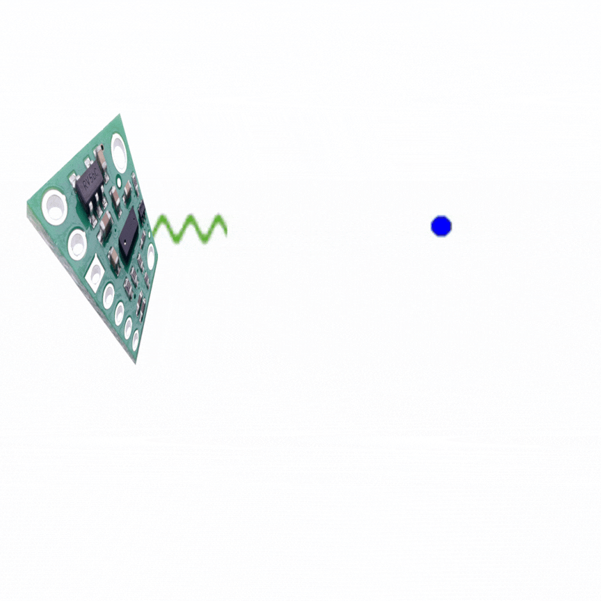
Arduino IDE • Bluetooth • Jupyter Notebooks • Time of Flight Sensors
This lab is to serve as an introduction to using the Time of Flight (ToF) sensor on the Artemis Nano microcontroller. We look at using multiple ToF sensors and determining their accuracy, as well as how different conditions (color and texture of objects) affect their readings.
When reading from the ToF sensor via I2C, the ToF sensor has a default I2C address of 0x52 according to page 4 of its datasheet.
However, if you have multiple ToF sensors connected to the same I2C bus, you will need to change the I2C address of one of the sensors to isolate their readings from each other. To change the I2C address of the ToF sensor, you can use the XSHUT pin on the sensor to turn it off and then set the new I2C address. The XSHUT pin is active low, so you can connect it to a GPIO pin on your microcontroller and pull it low to turn off one of the sensors. From here, you can use the default I2C address to communicate with the sensor that is still on and change its I2C address to a new value. Then, you can release the XSHUT pin to turn the other sensor back on, and it will still have the default I2C address, allowing you to communicate with both sensors separately using their respective I2C addresses.
Thinking ahead for future labs and applications, we have to consider where to place the ToF sensors on our robot. For our case, we place the sensors on a side and the front of the robot. Below is a diagram of the sensors on a robot, with obstacles that can be detected highlighted in green and obstacles that cannot be detected highlighted in red.
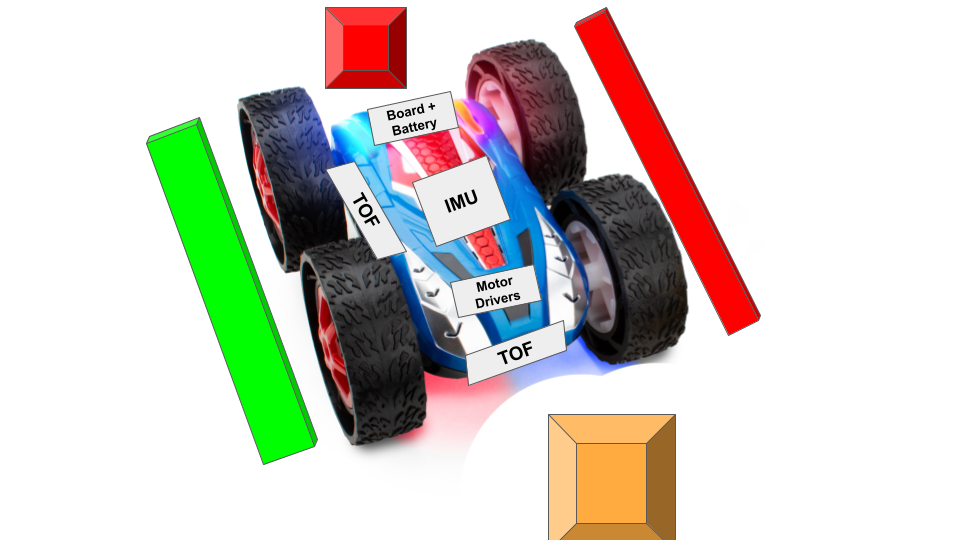
We can see that the robot can detect obstacles in front of it and to its side, but it cannot detect obstacles that are behind it or on the other side of the robot. This means that in a maze or narrow environment, it cannot detect obstacles on the other side of the robot, which can lead to collisions if the robot is not careful when turning or navigating around corners, but it can still avoid headon collisions. Also in a maze, it can employ a wall following strategy by just turning towards the side with the sensor and following the wall on that side to solve it. Below again is a wiring diagram of our current setup with our sensors:
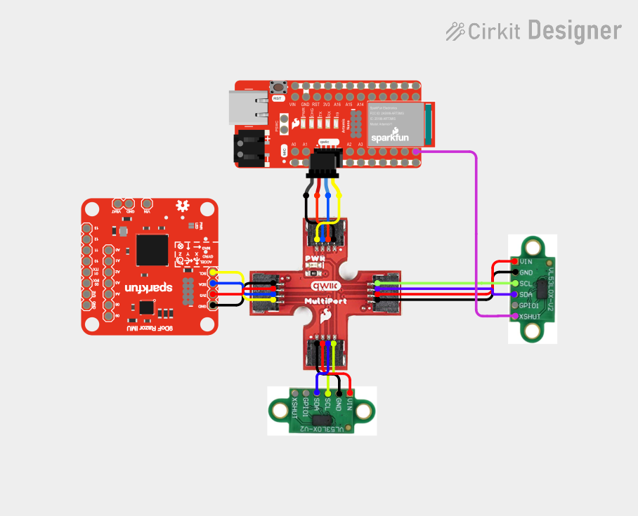
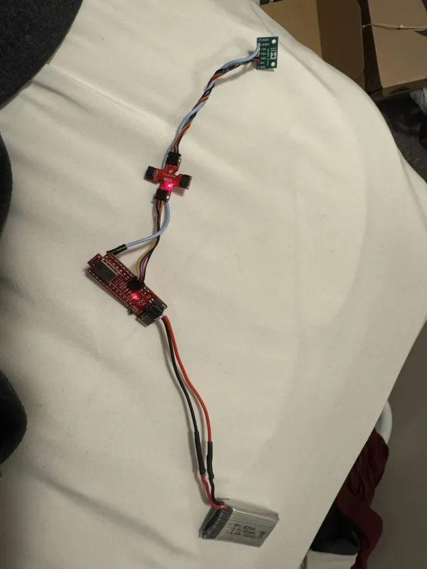
Above, we can see an image of our ToF sensor connected to the QWIIC breakout board, which is connected to our Artemis Nano board and our battery.
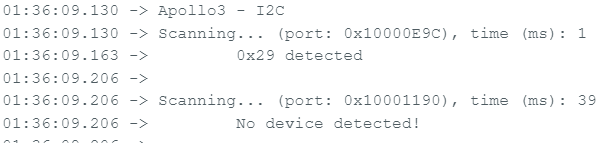
Above is an image of our Artemis Nano scanning for I2C devices using the Apollo3 library's I2C scanner code ("Example05_Wire_I2C.ino"). We can see that it detects a device at the address of 0x29, which is slightly strange since the default I2C address of the ToF sensor is supposed to be 0x52 according to the datasheet, but this is because the I2C scanner code is reporting the 7-bit address, since the last bit of the I2C address is used to indicate whether the operation is a read or a write as shown in page 19 of the datasheet. A screenshot of the datasheet is shown below for reference.
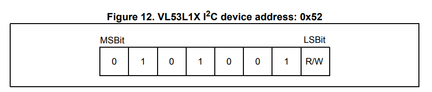
This ToF has three different ranging modes that trade off between accuracy over a certain range, maximum range, and speed.
The three modes are short, medium, and long range mode. Short range mode has a range of about 1.3 meters, medium range mode has a range of about 3 meters, and long range mode has a range of about 4 meters according to the
datasheet.
The short range mode is the most immune to ambient light and has the lowest timing budget of 20ms, as compared to long and mediums range modes which have timing budgets of 33ms, but it has the shortest range. The long range mode has the longest range but is the most susceptible to ambient light and has the longest timing budget, while the medium range mode is a middle ground between the two.
For our application, we chose to use the short range mode since we are mostly interested in detecting obstacles that are close to the robot, and we want to have a fast response time to avoid collisions, so the short range mode's lower timing budget corresponds to a high sample rate which is beneficial for our application.
However, if we need to focus more on mapping a large environment or detecting obstacles that are farther away, we could consider using the medium or long range modes, but we would have to be careful about the increased susceptibility to ambient light and the longer timing budgets, which could lead to slower response times and less accurate readings in stronger lighting conditions.
The way to switch our sensor to short range mode is to run: sensor.setDistanceModeShort()
We want to have two ToF sensors reading in parallel to get a better understanding of our surroundings and to be able to detect obstacles in multiple directions. However, due to the hardware limitations of the sensor, on startup the sensors will both have the same I2C address, which means that we can only communicate with one of the sensors at a time until we change the I2C address of one of the sensors using the XSHUT pin as discussed earlier. The code to turn off one of the sensors using the XSHUT pin, change the I2C address of the other sensor, and then turn the first sensor back on is shown below. After doing this, we can communicate with both sensors in parallel to get readings from both sensors at the same time.
void setup(void) {
// disable sensor B with xShut
pinMode(SHUTDOWN_PIN, OUTPUT);
digitalWrite(SHUTDOWN_PIN, LOW);
Wire.begin();
Serial.begin(115200);
while(!Serial);
Serial.println("Initializing Sensor A...");
// try to find sensor A
if (sensorA.begin() == 0) {
Serial.println("Sensor A found at 0x52. Moving to 0x54...");
sensorA.setI2CAddress(0x54);
delay(10);
} else {
// the sensor may fail to be found at 0x52
// When the board gets reset the sensor's address doesn't necessarily so it might still be at 0x54
// can unplug and replug in the sensor to reset the address but easier to just read from 0x54 and check if its there
sensorA.setI2CAddress(0x54);
if (sensorA.begin() == 0) {
Serial.println("Sensor A found already at 0x54.");
} else {
Serial.println("Sensor A NOT FOUND at 0x52 or 0x54. Check wires!");
while(1);
}
}
// turn on sensor B
Serial.println("Waking up Sensor B...");
digitalWrite(SHUTDOWN_PIN, HIGH);
delay(20);
if (sensorB.begin() != 0) {
Serial.println("Sensor B (0x52) failed to initialize.");
while(1);
}
Serial.println("Both Sensors Online!");
}A major problem I had when trying to setup two sensors was that it would work initially, but then when I changed the code (that is unrelated to the setup), the sensors would fail to initialize. The only solution was to unplug the sensors and plug them back in which fixed the problem. However, I realized that the problem was that when the board gets reset, the sensors don't necessarily reset their I2C addresses, so if they are already at the new I2C address, then the code will fail to find them at the default I2C address so we can never set the sensor to its new address. The solution to this problem is to just try to find the sensor at the new I2C address if we fail to find it at the default I2C address, which is what the code above does. This way, we can avoid having to unplug and replug in the sensors every time we reset the board or change the code.
Below is a video of both sensors working in parallel. Sensor B (xShut) is the one on the left with the xShutdown wire while sensor A is on the right. (Note: ignore the music blasting in this and all subsequent videos....I didn't realize it got captured)
We measured the time it took between ready measurements in the Arduino Loop. The code to do so and the results are show below:
void loop(void) {
int startTime = millis();
sensorA.startRanging();
sensorB.startRanging();
while (!sensorA.checkForDataReady() || !sensorB.checkForDataReady()) delay(1);
int distA = sensorA.getDistance();
int distB = sensorB.getDistance();
sensorA.clearInterrupt();
sensorB.clearInterrupt();
sensorA.stopRanging();
sensorB.stopRanging();
int endTime = millis();
Serial.print("A: "); Serial.print(distA);
Serial.print("mm \t B (xShut): "); Serial.print(distB);
Serial.print("mm \t");
Serial.print("Delay: "); Serial.print(endTime-startTime);
Serial.println("ms");
}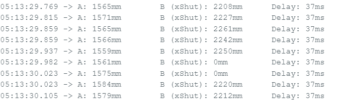
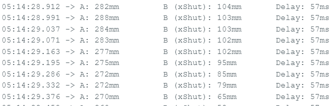
The first image shows the time it takes for both sensors to return a measurement when they are out of range (i.e., no object is in front of them). The second image shows the time it takes for both sensors to return a measurement when they are in range (i.e., an object is in front of them). While we should only need 20ms for our timing budget, we also have ot wait for the sensor to get the data output, and clear the interrupt, which adds to the time it takes for the sensors to return a measurement. We can see that when the sensors are out of range, it takes about 37ms for the sensors to return a measurement, while when the sensors are in range, it takes about 57ms for the sensors to return a measurement. This coincides with the datasheet's figure as shown below that shows that we have to wait for this inter. measurement that has a typical value of 20ms. Additionally, the time may change based on whether it sees an object or not since if it doesn't see any object, the sensor could bail out early and return its maximum range of ~1.3m. However, if it sees an object, it has to wait for the full timing budget to get a more accurate reading of the distance, which is why we see a longer time when the sensors are in range as compared to when they are out of range. This also means the limiting factor for the speed of our sensors is the inter. measurement period which may be able to decrease as its a "parameter set by the user" according to the datasheet.
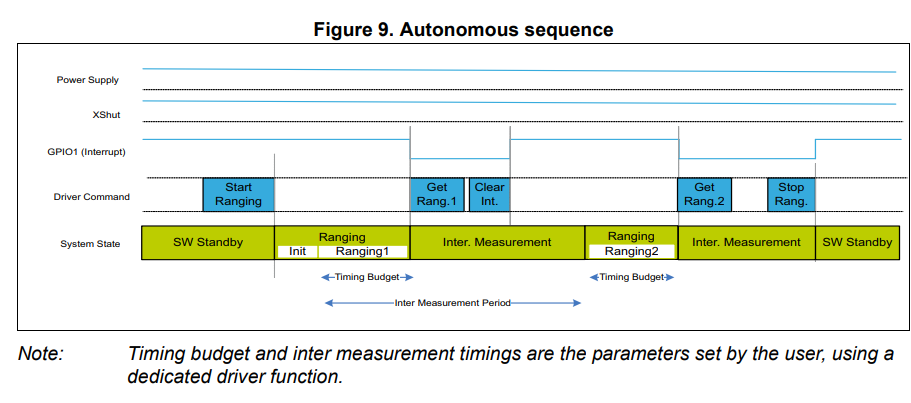
We measured the accuracy of our sensors by taping the ToF sensor to a tape measurer and comparing the distance reported by the sensor to the distance reported by the tape measurer. We took 5 measurements at different distances and recorded the results in the plot below. Also pictured below is the phyiscal setup.
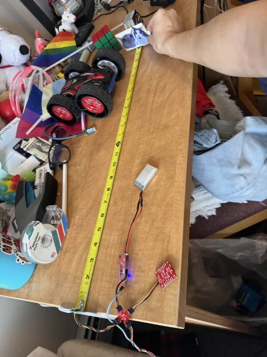
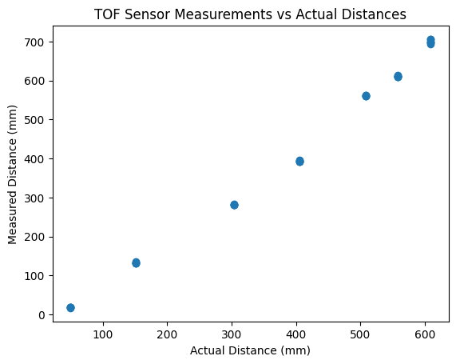
From this, we can see that the sensor is most accurate around the 400mm mark, measuring distances about 10mm off from the real value, but in the lower ranges (50-300mm) we see it measuring about 20mm less than it should. Additionally, in the higher ranges (500-600mm) we see it measuring 50-100mm more than it should. This is consistent with the datasheet that shows that the sensor is most accurate around the middle of its range and becomes less accurate as we get closer to the minimum and maximum range. However, some biasing may need to be added to the sensor readings to get more accurate distance measurements, especially in the lower and higher ranges. Additionally, we can see that the sensor is fairly repeatable frp the clustering of our points, which is good for our application since we are mostly interested in detecting obstacles and not necessarily getting an exact distance measurement.
To enable the previous section's data collection, we made the Artemis send its distance measurements from a ToF via Bluetooth. The code to do so is shown below:
case SEND_DISTANCE_STREAM:
{
// adds distance readings to an array for 5 seconds and then sends the array over BLE
int distanceA, distanceB;
unsigned long startTime = millis();
int index = 0;
// clear out time stamp and distance arrays before starting
memset(timeStampArray, 0, sizeof(timeStampArray));
memset(distanceAArray, 0, sizeof(distanceAArray));
memset(distanceBArray, 0, sizeof(distanceBArray));
while (millis() - startTime < 5000 && index < MAX_CAPACITY) {
if (sensorA.checkForDataReady() && sensorB.checkForDataReady()) {
distanceA = sensorA.getDistance();
distanceB = sensorB.getDistance();
sensorA.clearInterrupt();
sensorA.stopRanging();
sensorB.clearInterrupt();
sensorB.stopRanging();
timeStampArray[index] = millis() - startTime;
distanceAArray[index] = distanceA;
distanceBArray[index] = distanceB;
index++;
}
else {
sensorA.startRanging();
sensorB.startRanging();
}
}
// send data over BLE
for (int i = 0; i < index; i++) {
tx_estring_value.clear();
tx_estring_value.append("T:");
tx_estring_value.append(timeStampArray[i]);
tx_estring_value.append("A:");
tx_estring_value.append(distanceAArray[i]);
tx_estring_value.append("B:");
tx_estring_value.append(distanceBArray[i]);
tx_characteristic_string.writeValue(tx_estring_value.c_str());
}
}We can then read this data in a Jupyter notebook and plot it in real time to see the distance measurements from both sensors over time. Below is a plot of the distance measurements from both sensors over a 5 second period, in which we positioned both sensors next to each other and I moved my a card away from the sensors at a steady rate. We can see that the sensors are reporting slightly different measurements but are very consistent with each other. This is a good indication that our sensors are working properly and that we can use them to detect obstacles in our environment.
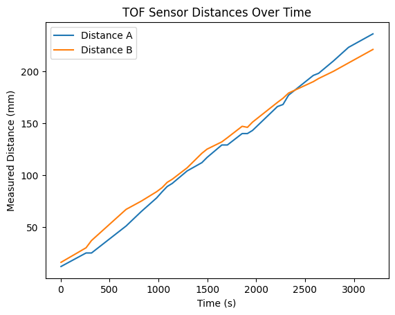
In addition to sending distance measurements from our ToF sensors over Bluetooth, we can also send data from our IMU over Bluetooth to get a better understanding of our environment
and to determine where the obstacles are in relation to our robot. We altered the SEND_DISTANCE_STREAM case in our code to also include the IMU data by adding collect_imu_data(),
from the previous lab, between measurements and sending those out over Bluetooth as well. A plot of collecting IMU and ToF data is shown below:
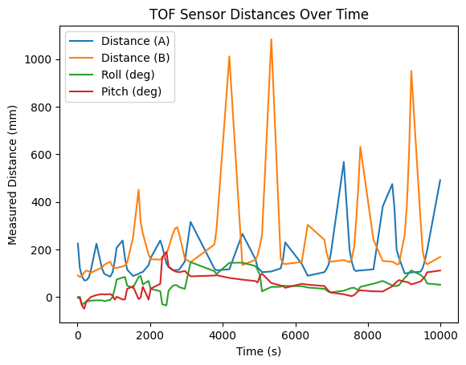
The pitch and roll data is in degrees while the distance data is in mm, which is why the distance data looks relatively flat. However, we can still see that the distance data is changing in relation to our orientation, as we can see that the spiking pattern is distance matches up with the small spikes in pitch and roll. For this plot, I was shaking my hand back and forth, around both x and y axis, above a table while holding the time of flight sensors slightly offset from each other. We can see that as I turn my hand, the sensors oscillate between seeing the far end (or lack) of the table and seeing the near end of the table. The large spikes on the graph are from when the sensors are pointed off the table, since the ToF sensors in short mode have a maximum reading of about 1.3m, so when they are pointed at a far away object/no object at all the reading saturates to 1.3m. We can see that the sensor readings spikes are correlated with the IMU readings as well since the pitch and roll data follows the same spiking pattern as the distance spikes.
A few common types of infrared based sensors are amplitude-based sensors, triangulation-based sensors, and our time of flight sensors. Amplitude-based sensors work by emitting an infrared signal and measuring the intensity of the reflected signal to determine the distance to an object. They are generally cheaper and simpler than other types of sensors (~$0.50), but they can be less accurate and more susceptible to interference from ambient light and the reflectivity of the object. Additionally, they have a much shorter range than other IR sensors of a recommended maximum range of about 10cm. These sensors are more useful in applications where the distance is relatively short, cost is a concern, and we don't need to worry about accurate distance measurements, just the presence of an object within a certain range, such as in a simple obstacle detection system for a small robot or in a touchless switch. Triangulation-based sensors work by emtting an infrared laser and using array of photodetectors to measure the angle of the reflected signal to determine the distance to an object. They are generally more accurate than amplitude-based sensors and have a longer range (maximum recommended range of ~1m), but they can be more expensive (~$10) and more complex to implement. These sensors are also often larger since they need an array of photodetectors, and they have a lower sample rate than amplitude-based sensors (~26Hz). These sensors are also susceptable to high ambient light. The triangulation-based are more useful in applications where we need extremely precise distance measurements at a short range, such as in a 3D scanner or in a robotic arm that needs to pick up small objects with high precision. Time of flight sensors, like the ones we are using, work by emitting a modulated infrared signal and measuring the time it takes for the signal to reflect back to the sensor to determine the distance to an object. They are generally more accurate than amplitude-based sensors and have a longer range than both amplitude-based and triangulation-based sensors (maximum recommended range of ~4m), and can be cheaper than triangulation-based sensors (~$6.50), but are less accurate at short distances. Additionally, their sample rate can vary (7-30Hz) depending on the distance mode, so if you want to measure short or long maximum distances. These sensors are also mostly insensitive to texture, color, and ambient light. These sensors are good for detecting obstacles and measuring distances at a relatively long range of up to 4m, or detecting them at short range, but cheaply and with a very small form factor.
We tested the sensitivity of our ToF sensors to different colors and textures by measuring the distance to different objects with varying colors and textures and comparing the readings. We found that the sensor was generally not very sensitive to different colors, as we were able to get similar readings for objects of different colors but similar textures. The readings were all conducted at the same distance of about one foot (304.8mm) to control for distance. We had the ToF read distance for 5 seconds for each object to get a sense of the distributions of readings for each color and texture, and we found that the distributions of readings for different colors but similar textures were mostly overlapping, indicating that the sensor was not very sensitive to color. For our test, we placed a Rubix cube at the one foot line so each color had the same texture. Pictures of the testing setup and results are shown below:
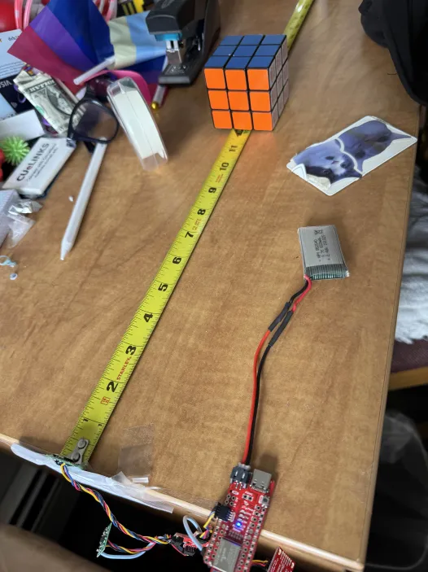
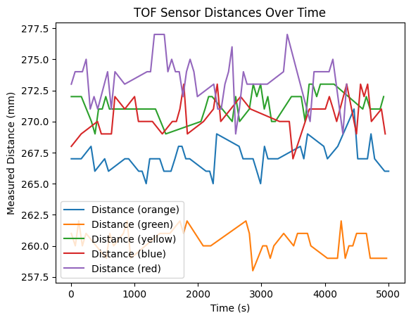
However, we did find that the sensor was more sensitive to different textures, as we were able to get different readings for objects of similar colors but different textures. Again, our testing setup had us place objects of different textures at the same distance of one foot and have the ToF read distance for 5 seconds to get a sense of the distributions of readings for each texture. We tested a soft but smooth object (red t-shirt), a hard and smooth object (a rubix cube), a soft and rough object (a ball of cotton stuffing), a rough and smooth and slightly translucent object (a crumpled up plastic bag), and a hard and rough object (a crumpled piece of paper). Pictures of the testing objects and results are shown below: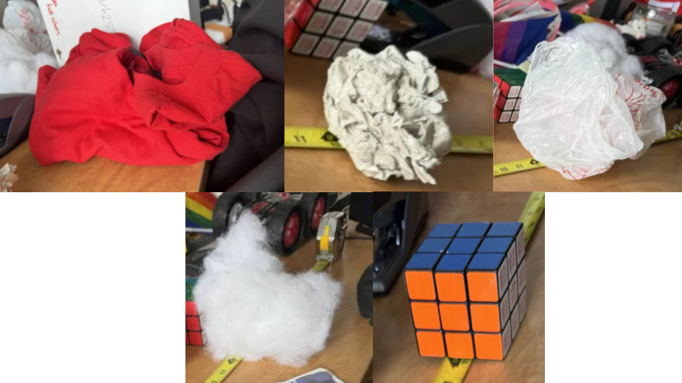
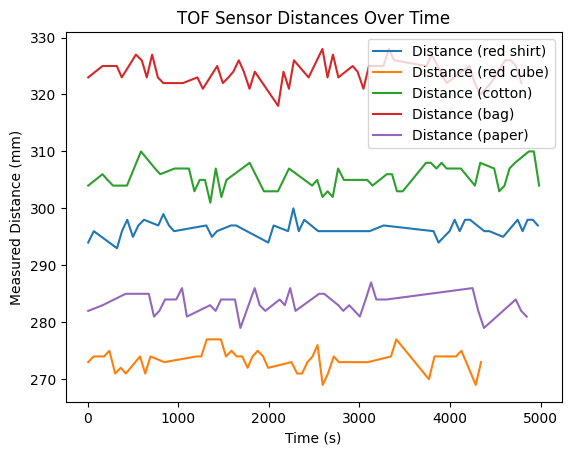
Overall, the objects with a rougher texture (everything but the Rubix cube) had higher distance readings than the smoother object (the Rubix cube). This is likely because the rough texture causes more scattering of the infrared signal, which can lead to a longer time of flight and thus a higher distance reading. Interestingly, the crumpled up plastic bag had the highest distance readings, which could be due to its combination of being rough and slightly translucent, which could cause even more scattering of the infrared signal. These results indicate that the sensor is fairly sensitive to different textures, and that the texture of an object can have a significant impact on the distance readings from the sensor. This is important to keep in mind when using the sensor in real-world applications, as the texture of objects in the environment can affect the accuracy of distance measurements and obstacle detection.ChatGPT was used to help format parts of this website and report. Aiden McNay's website and Aidan Derocher's website was used as a reference for texture and color plots.